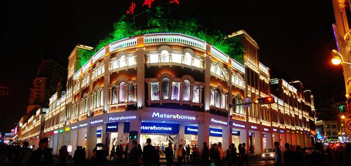
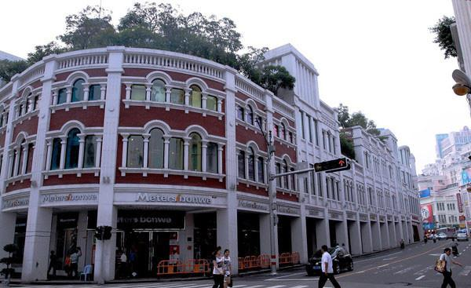
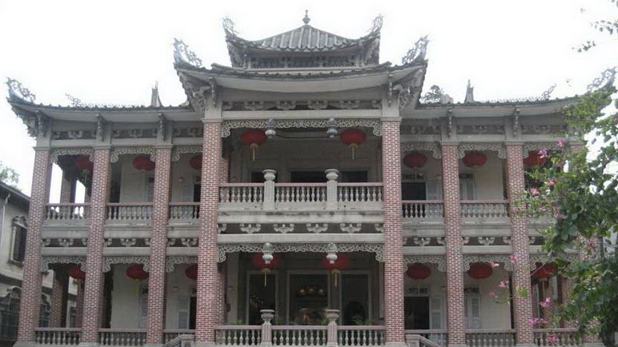

古典建筑
中西合璧
古典建筑徜徉之旅
行程概要
- 行程天数1日游
- 目 的 地厦门
- 线路类型金砖雅游
- 推荐指数★★★★★
- 行程特色嘉庚建筑,
线路介绍
费用说明
预订须知
相关产品
线路介绍
-
第1天
D1
第1天
【厦门大学】--【厦门中山路】--【鼓浪屿】--【鼓浪屿历史文化陈列馆】--【鼓浪屿万国建筑】--【海天堂构】
行程安排
8:30 酒店出发。
9:00-10:00 参观【厦门大学】“穿西装，戴斗笠”的嘉庚风格建筑， 从嘉庚建筑风格中，感受陈嘉庚先生的创新的思想艺术境 界、超然永恒的精神气质。
10:15-11:15 漫步中华十大名街【厦门中山路】，沿街两边均为中西合 璧的骑楼建筑，别具风格。
11:30-12:30 品尝闽南菜肴，位于鹭江之畔，毗邻 海关、外贸、商业、金融中心，与“海上花园”鼓浪屿隔 海相望，景色优美。
12:50-13:10 厦门轮渡码头乘船至【鼓浪屿】。
13:30-14:00 参观【鼓浪屿历史文化陈列馆】，馆内陈列了鼓浪屿从古 到今的发展变化的图文资料，全方位了解鼓浪屿历史变迁。
14:00-15:00 游览【鼓浪屿万国建筑】，这里荟萃了上千座中西合璧、 风格各异的中外建筑，如海天堂构、黄荣远堂等。
15:00-17:00 参观【海天堂构】建筑，品咖啡、听南音、赏布袋戏。
18:00返回酒店。
景点 · 厦门大学
厦门大学是由毛泽东同志誉为“华侨旗帜、民族光辉”的著名爱国华侨领袖陈嘉庚先生于1921年创办的。这是中国近代教育史上第一所由华侨创办的大学，也是中国跨世纪重点建设的一批高水平的大学之一。
厦门大学占地近146万平方米。该校不仅洋溢着浓郁的学术氛围和人文气息，还拥有十分优美的校园风景。校内有芙蓉湖、情人谷水库等景点，气氛静谧而浪漫。厦门大学的旧建筑清水墙、琉璃顶等，极富特色，是中西建筑风格结合的典范。尤其是建南大礼堂和上弦场，相当宏伟。每当六月凤凰花开，校园里一片火红，而毕业生即将离校，整个校园弥漫着伤感而美丽的气氛。
校内建有厦门大学人类博物馆和鲁迅纪念馆。前者珍藏了史前时期至现代有关人类及其发展的文物资料，特别是反映闽南和台湾文化的文物，以及福建古代与国外的交往，尤其是泉州海外交通的史迹等，极富特色和价值。鲁迅博物馆以鲁迅在厦大任教时期的故居和四个陈列室，展示了鲁迅先生的生平经历与可敬人。饱览厦大的美景之后，还能参观到这些珍贵的展览，真是一份不同寻常的收获。
厦门大学
厦门大学

厦门大学
景点 · 中山路
中山路位于厦门岛西南部，是厦门市思明区中华街道的一条东西走向的道路。日据时代称为大汉路（1933年－1945年），文革时期称为东方红路。中山路长约1.2公里，西起轮渡鹭江道，中跨思明南路与思明北路的分界点，东达新华路（即今厦门市公安局，原厦门市工人文化宫所在地）与公园南路相连。
中山路始建于1925年，连接了中山公园和鼓浪屿两个重要景区。沿街均为闽南风格的骑楼建筑，自2006年起以“旧城中山路历史风貌街区”的名义受《厦门市紫线控制专项规划》保护，严禁大面积拆除、开发活动。
中山路沿线是厦门商业的发源地，是厦门市最繁华的商圈之一，在旧城街区仍然保留着较完整的近代历史风貌。由于走到底就是厦门轮渡码头，很多去鼓浪屿的游客，会顺带来逛一下，这里遍布各种厦门小吃、特色商店和酒吧等，是吃货们的朝拜圣地。

中山路

中山路

中山路
景点 · 鼓浪屿
鼓浪屿位于厦门岛西南隅，面积1.87平方公里，常住人口约1.6万人，隔500米宽的鹭江与厦门岛相望。宋时鼓浪屿原名圆沙洲、圆洲仔，因岛西南有一海蚀岩洞受浪潮冲击，声如擂鼓，自明朝雅化为今名。鼓浪屿素有“海上花园”之誉，岛上气候宜人，四季如春，无车马喧嚣，处处鸟语花香，宛如一颗璀璨的“海上明珠”，镶嵌在厦门海湾的碧海绿波之中。鼓浪屿景区系全国文明风景旅游区、国家5A 级旅游区、国家级风景名胜区、ISO14000国家示范区、全国35个王牌景点之一、福建“十佳”风景区之首；2005年在《中国国家地理》“选美中国”评选中，脱颖而出，被评为“中国最美城区”榜首；2006年入选“外国人最值得去的50个地方金奖”。鼓浪屿周边海域为厦门港主要部分，紧临中华白海豚保护区、文昌鱼保护区、大屿岛白鹭保护区，与金门列岛隔海相望。登高远眺，鼓浪屿全景及周边美景尽收眼底，素有“不游鼓浪屿，枉费厦门行”之说。随着厦门经济特区的腾飞，鼓浪屿各种旅游配套服务设施日臻完善，成为集观光、度假、休闲、娱乐、购物为一体的综合性著名风景旅游区，每年都吸引四百万以上的海内外游客慕名前来观光游览。

鼓浪屿

鼓浪屿

鼓浪屿
景点 · 海天堂构
海天堂，鼓浪屿上最时尚精致的老别墅文化旅游新景点，堪称厦门的新天地。
海天堂建于1921年，位列鼓浪屿十大别墅之一，是鼓浪屿上唯一按照中轴线对称布局的别墅建筑群，为菲律宾华侨黄秀?购得租界洋人俱乐部原址所建，以中楼最有个性，“是宫非宫胜似宫，亦殿非殿赛过殿；不中不洋不寻常，中西结合更耐看。”这在鼓浪屿也是独一无二的。
海天堂共有五幢老别墅，现对外开放三幢。其中，34号被开发成极具品味的南洋风情咖啡馆，供游人在老华侨的别墅中，体验悠闲的咖啡时光；42号开发为中国非物质文化遗产南音和木偶的演艺中心，一楼为木偶演艺中心，木偶世家的表演精彩绝伦；最富建筑特色的主楼38号则被开发为鼓浪屿建筑艺术馆，主要展示老别墅及其背后鲜为人知的名人往事，深具怀旧色彩。游人还可欣赏到难得一见的“御前清曲”南音艺术表演。
作为鼓浪屿历史风貌建筑保护开发再利用的典范，历时两年、斥资千万重新整修后的海天堂构外表依然保留原有的建筑风貌，内部已赋予丰富的文化旅游功能，欢迎海内外朋友莅临品味鼓浪屿中西合璧的建筑和文化。

海天堂构

海天堂构

海天堂构
温馨提示
1.本行程酒店正常办理入住时间均为14：00，若您于14：00之前到达，酒店如有空房即可安排入住，如没有您可以将行李先寄存在前台，自行外出游览再办理入住，抵达酒店后报预订人姓名，拿入住人证件（成人请提供身份证原件等有效证件，儿童请出示户口本原件）办理入住手续。
2.标间/大床随机安排，如有特殊需求，请签约前与您的专属客服进行确认，尽量安排不保证
3.此接机服务非我公司专车，会有其他同时间抵达的客人一同搭乘，逐一送至酒店，请您见谅。
2.标间/大床随机安排，如有特殊需求，请签约前与您的专属客服进行确认，尽量安排不保证
3.此接机服务非我公司专车，会有其他同时间抵达的客人一同搭乘，逐一送至酒店，请您见谅。
4.在厦住店中国籍旅客必须凭身份证办理入住，不支持护照等其他有效身份证件，请您务必使用身份证哦。
早餐：无；午餐：有；晚餐：无
出行须知
注意事项
• 为了您人身、财产的安全，请您避免在公开场合暴露贵重物品及大量现金。上街时需时刻看管好首饰、相机等随身物品。
•游泳、漂流、潜水、滑雪、溜冰、戏雪、冲浪、探险、热气球、高山索道等活动项目，均存在危险。参与前请根据自身条件，并充分参考当地相关部门及其它专业机构的相关公告和建议后量力而行。
•为确保锂电池的安全运输，避免发生不安全事件，我们友情提醒您，民航局将对旅客携带锂电池乘机进行严格检查。详情请参考 民航局关于旅客行李中携带"锂电池、充电宝"乘机规定的公告。
•乘坐国内航班的旅客，居民身份证过期不能继续使用。若有效期满的，可以凭临时居民身份证或公安机关出具的贴有本人近期免冠证件照、并加盖户籍专用章、注明有效期的《申领居民身份证回执》作为有效乘机身份证件替代使用。同时中华人民共和国护照可以作为有效乘机身份证件，办理国内航班购票、值机、安检手续；旅客乘坐国内航班，办理购票、值机、安检手续时，应当使用同一个有效乘机身份证件。中国大陆地区居民使用往来港澳通行证、往来台湾通行证乘坐国内航班的旅客，必须同时提供居民身份证或者民用机场公安机关签发的《乘坐民航飞机临时身份证明》才可办理登机手续。 特别提醒：凡是乘机的16周岁以下中国大陆地区居民（包含婴儿），务必出示包括出生证明、户口薄或户口所在地公安机关出具的身份证明（16周岁以下的人需在户籍所在地派出所出具身份证明，机场派出所无法开具临时证明）才可办理登机手续。 具体实施细则以机场相关部门指导意见为准。
 330445074@qq.com
330445074@qq.com 12345
12345